Simplifying the setup of vCenter High Availability.

An unprotected vCenter is a single point of failure.
vCenter is critical to a customer's virtual infrastructure. When software or hardware failure takes it offline, every dependent workload feels it. The existing workflow for enabling vCenter High Availability (vCHA) was complicated and drew negative customer feedback — turning it into a tedious process.
The simplified setup, end to end.
A short walkthrough of the shipped flow — from launching setup, through resource and network configuration, to a fully configured vCHA cluster.
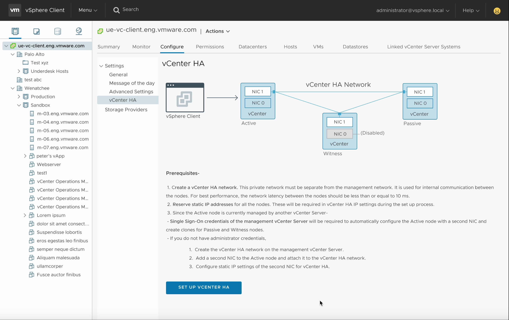
Active. Passive. Witness.
As part of vCHA, two copies of vCenter — the Active node, plus Passive and Witness nodes — are deployed on a private network and kept in sync. When the Active node fails, the Witness initiates failover to the Passive, which becomes the new Active. The Witness reconciles any changes that occurred during the gap, and the cluster's identities swap. Downtime: only a few seconds.
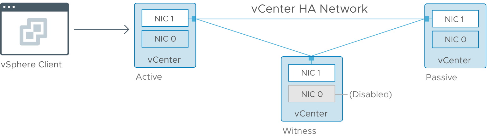
What customers told us before, during, and after design.
I presented several iterations of the designs to customers and gathered insights that informed every decision. Six findings shaped the final workflow.
Customers found it difficult to understand self-managed vs. managed by another vCenter, in the same or a different SSO domain.
Most customers were already using a distributed switch over a standard switch.
Most had no concerns over automating the cloning of Passive and Witness nodes — provided they retained control over resource settings.
VM settings were important to nearly every customer. Only one was comfortable entering management-vCenter credentials just to see them.
The getting-started screen had too much text. Customers wanted less reading, more doing.
The terminology on the credentials screens was confusing and needed to be rephrased.
One workflow, not two.
The existing basic and advanced workflows were both complicated, especially the advanced path. Working with my PM, I analyzed both and proposed a single, unified workflow that combined the strengths of each — automating much of the backend work and removing the burden from the user.
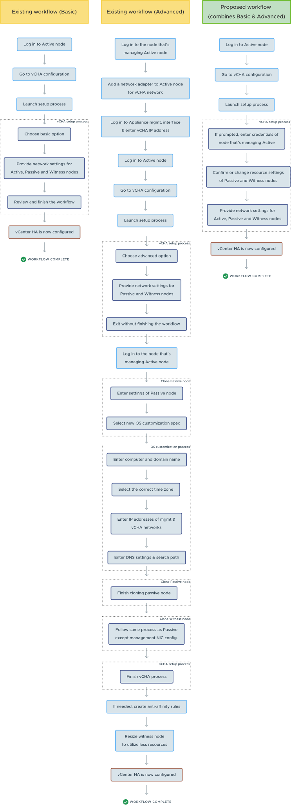
Lo-fi prototypes for fast stakeholder feedback.
To visualize the new workflow, I built lo-fi prototypes to gather quick feedback from stakeholders and validate the structure before investing in hi-fidelity mockups.
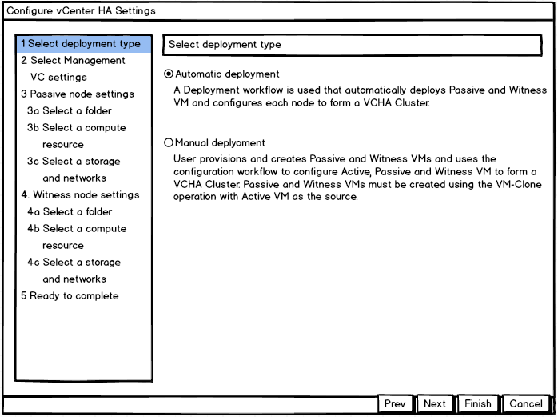
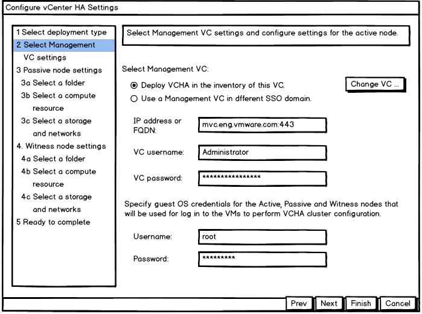
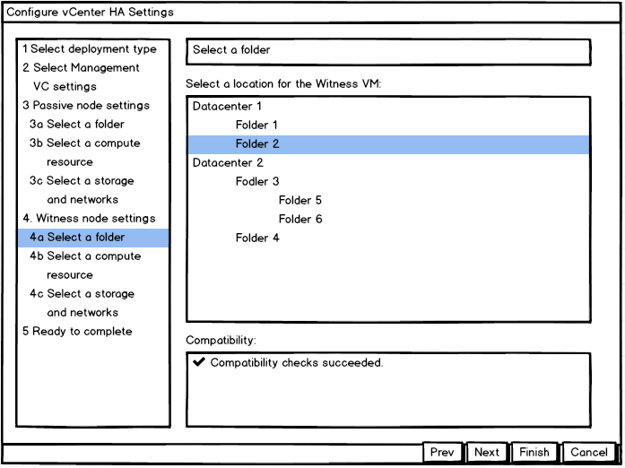
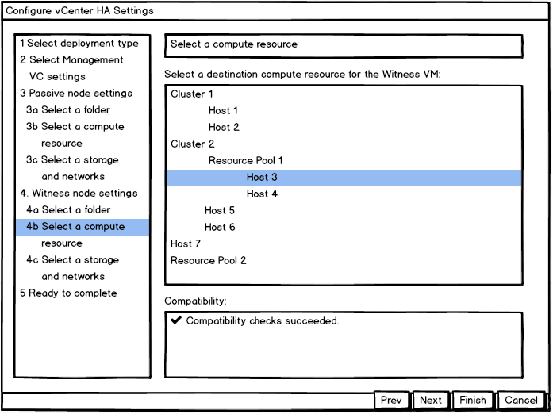
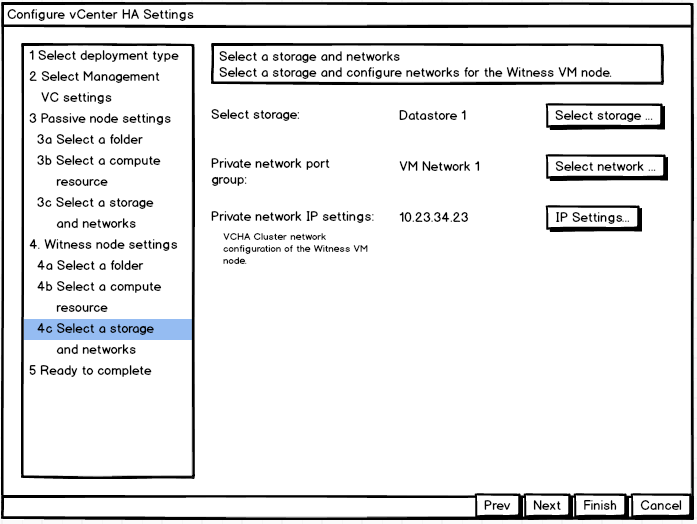
Hi-fi mockups, and the wizard-in-a-wizard problem.
The first hi-fi version captured every workflow detail and aligned stakeholders. But one challenge surfaced quickly: the setup was framed as a wizard inside a pop-up, with additional nested workflows requiring their own wizards in additional pop-ups. Nested pop-ups had to go — they fragmented context and broke the operator's flow.
Out of the pop-up. Into the page.
The next iteration addressed the wizard-in-a-wizard challenge by removing the pop-up wizard entirely for the main workflow — letting setup live on the page, with clear progressive steps instead of nested modals.
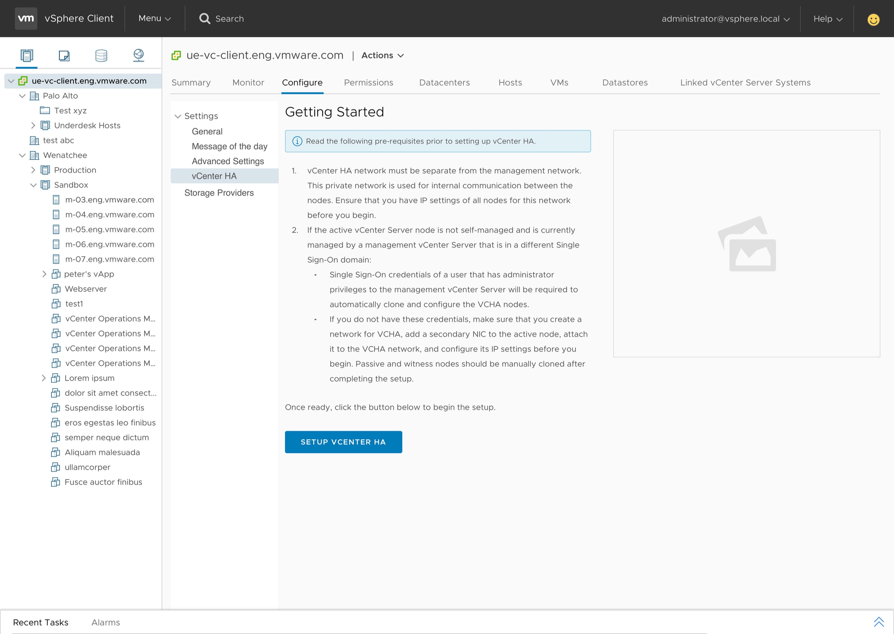
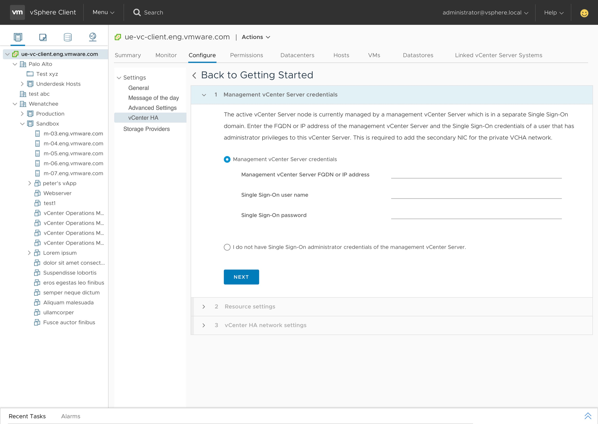
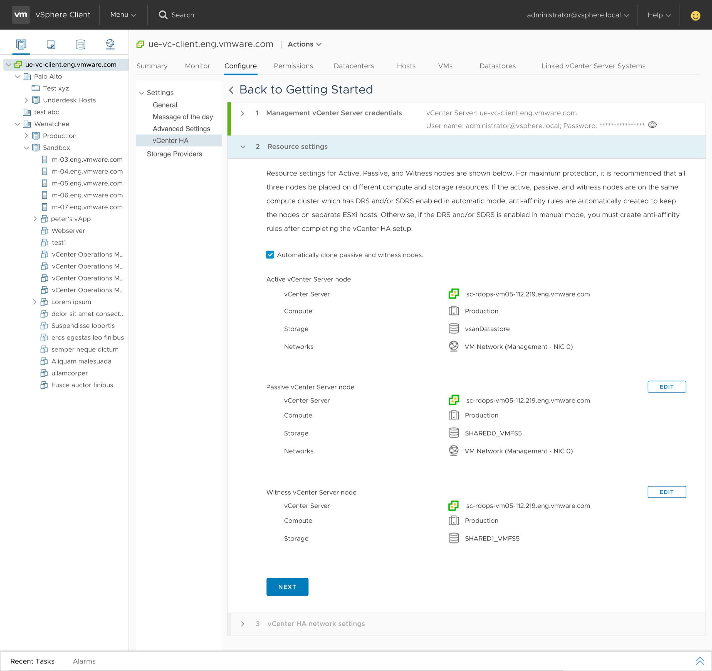
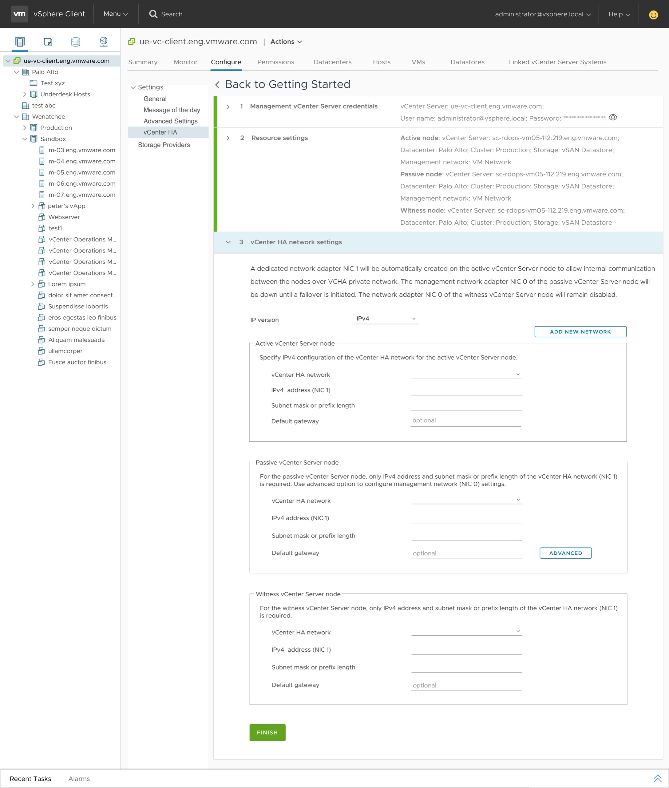
A simpler vCHA, in the operator's own words.
The simplified experience shipped — first with vSphere 6.5, then refined in vCenter 6.7 Update 1's fully HTML5 release. Customers and the broader VMware community noted the difference.
In the fully functioning HTML5 release of vCenter 6.7 Update 1 onwards, the setup of vCenter HA was hugely simplified.
Since the introduction of vCenter High Availability with vSphere 6.5, the process of rolling out this great feature has become easier and more intuitive.
Two lessons that travel.
Collaboration is the prerequisite
Designing meaningful workflows in dense technical domains takes real partnership — with PMs who translate business needs into clear product goals, and with engineers who own the technical constraints and the underlying architecture. Neither perspective alone is enough.
Optimize for the majority, signal the rest
You can't tailor a single workflow to every user. Research showed most customers were already moving towards distributed switches — so that became the default, surfaced path, while standard-switch support stayed available but visually quieter.